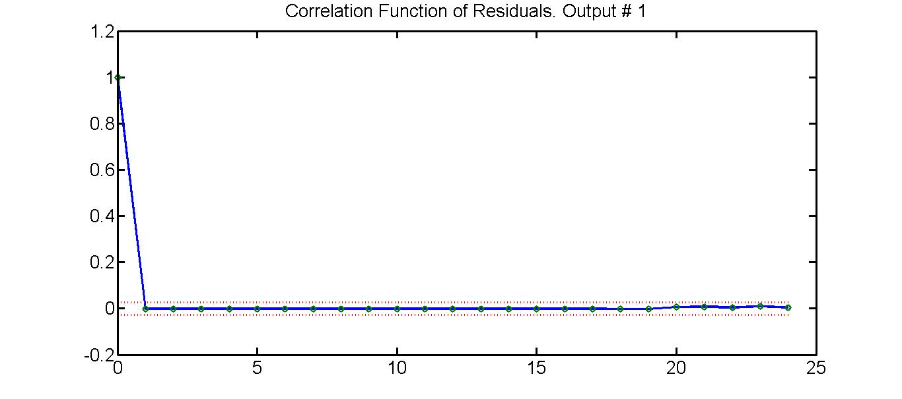
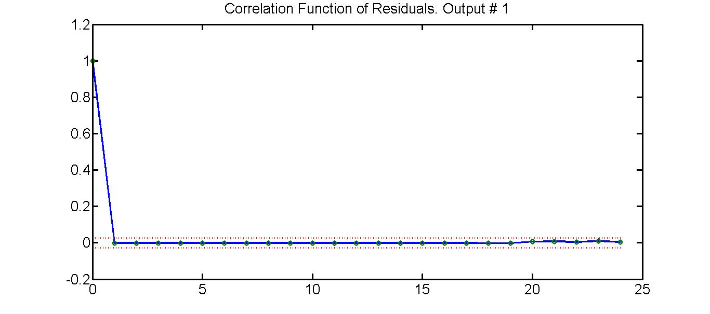
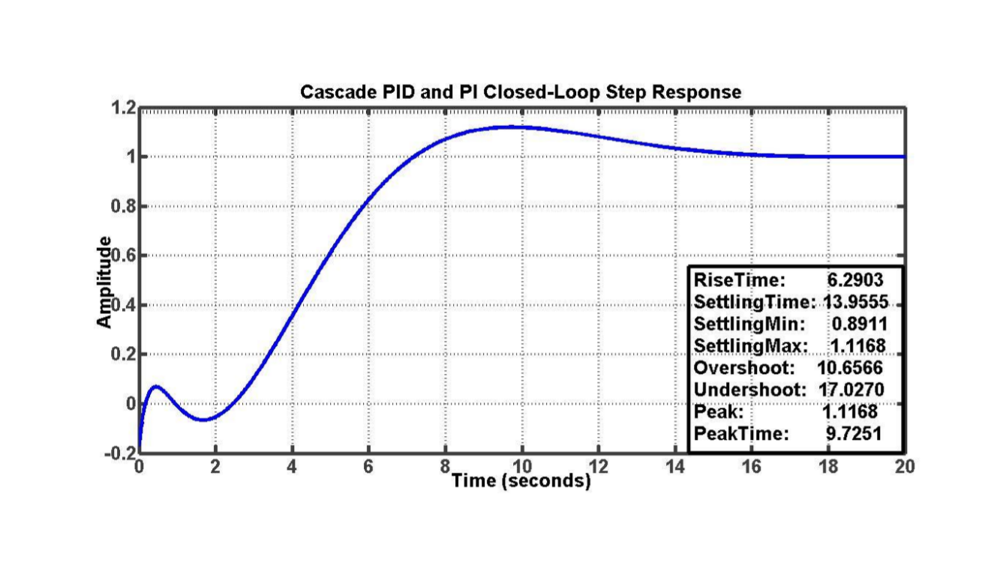

Head and Neck Cancer Radiotherapy
Towards fine-precision automated immobilization in maskless radiosurgery
Presented by Olalekan Ogunmolu / @patmeansnoble
Background
Head and neck (H&N) cancers are among the most fatal of major cancers in the United States
2014: 35% of all pharynx and oral cavity cancers developed led to fatility [Siegal, R. et. al]
Cancer kills almost 600,000 people each year in the U.S. alone.
Source: NVIDIA Foundation Award.
So how are H&N Cancers typically treated?
- Surgery Pros: Oldest technique and most successful
- Chemos Pros: Kills cancer cells throughout the body
Cons: Only useful when cancer is localized (highly improbable in most cases)
Cons: Highly toxic; can kill healthy cells; highly carcinogenic
- Radiation Therapy
Pros: Good procedure for distributed cancer cells
Pros: Palliative treatment when eliminating cancer tumors is impossible
Pros: Helpful to shrink cancer tumors pre-surgery or tumor leftovers post-surgery
Pros: Minimal exposure of patient to radiation (treatment less than 15 mins typically) Often involves a combination of drugs and chemos
Body cancer radiotherapy (RT) typically use IMRT & IGRT
Wait, what is IMRT/IGRT?
IMRT: Intensity Modulated Radiation Therapy
- Deals with modulating the dosage and shaping of the radiation beam to precise size of tumor cells
- IMRT improves accuracy of carefully targeted radiation thereby minimizing exposure of healthy organs
- Deviations still occur between planned dose and delivered dose of radiation
- Enter IGRT
IGRT: Image Guidance Radiation Therapy
-
Deals with precise and accurate patient positioning on a treatment table to avoid dose deviations from planned targets
The uncertainty in dose measures to malignant tissues necessitated use of IGRT before treatment
Goal was to assure precise localization of the beam onto the target tumor cell
Source: Prostrate Cancer Center
Typical setup
What it entails
Accurate markers are placed inside a patient's body after consultation with a medic
Few days afterwards, a radiation-based scan (CT) of the markers is performed to localize the exact position of the markers in the gland
The scan provides the size and shape of the cancer cells for computerized treatment planning calculations
Current IGRT radiation-based systems include
[Jennifer De Los Santos et.al., 2012]
-
Electronic Portal imaging detectors
e.g. IGRT and MV imaging; 1 - 2 mm accuracy; does not acquire 3D volumetric info - Cone-beam CT retractable conventional x-ray tube and amorphous silicon x-ray detectors mounted either orthogonal to the treatment beam axis; used in lung/throat/liver, brain, head and neck cancer
- Fan-beam CT: in-room gantry-moving CT linac system to move across the patient instead of couch moving patient into the scanner as in conventional CT designs
-
Stereoscopic imaging
used in CyberKnife; 2D imaging system; accuracy < 1mm -
Combination alignment systems: optical imaging and 2-D kV orthogonal imaging
Facilitates localization of rigid and mobile targets which may be volumetrically aligned with CBCT
Related Work
- Frameless and Maskless Cranial SRS [Cervino et. al. 2010]
- Idea was to verify accuracy of IGRT systems without rigid frames on face
- Employed deformable masks of the following sort:


Pros
-
Anthropomorphic head phantoms employed in checking the accuracy of a 3D surface imaging system (AlignRT Vision System)
-
Compared results from an infra-red optical tracking system with the AlignRT vision software system
-
For different couch angles, the difference between phantom positions recorded by the two systems were within 1mm displacement and 1° rotation
-
Patient motion due to couch motion was less than 0.2mm
Cons
-
6DOF positioning systems model the human body as a rigidly
-
No accounting for flexibility/curvature of neck
-
Limited positioning of patient can reduce effectiveness
-
Patient motion due to couch motion was less than 0.2mm
-
If patient moves , therapy must be stopped, patient repositioned, costs time and money
Research Goals
Aims
Accurate and automatic patient positioning system (pre-treatment)
In-treatment automatic and accurate patient positioning with patient motion compensation
Objectives
Surface-image control of the cranial flexion/extension motion of a patient during simulated H&N RT (pre-treatment)
Use radiation-transparent soft robot system for positioning/manipulation tasks
Overview
Initial study and experiment demonstrating a 1-DOF intra-cranial control of patient motion during H&N Cancer RT
Testbed is a Mannequin head lying in a supine position on an inflatable air bladder (IAB)
Soft-robot consists of the IAB, two two-port SMC Pnematics Co. proportional valves, and silicone tubes for conveying air from a pressurized air canister
A Kinect RGB-D camera is employed for head motion sensing and feedback to a classical control network implemented on an NI myRIO hardware
Work in partnership with my advisor, Dr. Gans and Drs. Xuejun Gu and Steve Jiang of the Radiation Oncology Department of UT Southwestern, Dallas, TX, USA
System Set-up


Modeling procedure
- Collect Data Set, $Z^N$ of input-output signals, at each time step $k$ for a total of $N$ samples
-
Objective: fit a continuous-time parametric model structure similar to a one-step ahead predictor
$$y^n = -a_{n-1}y^{n-1} - \cdots - a_0 y + b_m u^m +$$
$$b_{m-1}u^{m-1} + \cdots b_1 \dot{u} + b_0 u$$
- Therefore, form the parameter vector $\theta = [a_{n-1}, \cdots, a_0, b_{m-1}, \cdots, b_0]$
Modeling procedure cont'd
-
and a memory-fading vector of past input-output data:
$\phi(t) = [-y^{n-1} \cdots - \dot{y}, - y, u^m \cdots u]$
such that the estimated output can be written as
$$\hat{y}(t|\theta) = \phi^T(t)\theta $$ - Choice of excitation signal important to reproduce desired properties of the system in model and avoid wide crests as much as we can
- Identification Goal: identify the best model, χ, in the set guided by the rigorous freq. distribution analysis
Excitation signal is sawtooth waveform
- Integral and differential of a sawtooth waveform preserves the sawtooth waveform with only phase and amplitude shifts
Spectrum contains both even and odd harmonics of the
fundamental frequency
:::to excite all frequency dynamics we want from model
Waveform amplitude = 165mA (max. operating current to SMC valves)
Frequency was chosen to avoid aliasing [i.e. > 2 $\times$ sampling frequency (Nyquist Sampling theorem]
Excitation signal should produce corresponding rise/decrease in head pitch motion
:::9,000 samples is not rich enough to avoid inherent noise which dwarfs data structure
Therefore, we remove means and linear trends
::to remove outliers, high frequency spikes etc
The rest of the modeling stages is straightforward
::prewhiten input signals, estimate impulse response (to examine degree of delay in data), examine correlation functions (Wiener model)
Crosscorrelation from input to output should tell us about the dynamics of system
::since it is proportional to the kronecker delta function (impulse response)
Cross-Correlation Analysis
The cross-correlation function provides an estimate of the system impulse response and is defined as:
\begin{equation} \psi_{uy}(\tau) = \dfrac{\sum\limits_{t=\tau+1}^N\left[u(t-\tau) - \bar{u}\right]\left[y(t)-\bar{y}\right]} {\sqrt{\sum\limits_{t=1}^N\left[u(t) - \bar{u}\right]^2}\sqrt{\sum\limits_{t=1}^N\left[y(t) - \bar{y}\right]^2}} \end{equation}where $\tau = 0, \pm1, \cdots, \pm (N-1)$.
The cross-correlation function (CCF) is given by the convolution of the system impulse response and the process auto-correlation function (Wiener-Hopf equation)
\begin{equation} \psi_{uy}(\tau)=\int h(\nu) \mathbb{E}[u(t)u(t+\tau - \nu)]d\nu \\ = \int h(\nu) \psi_{uu}(\tau - \nu)d\nu \label{eq. wiener-hopf} \end{equation}
CCF between the output and input is proportional to the system impulse response when the input is white noise
Prewhiten input-output signals to change structure of signals
$$U(t) = U_w(t) \dfrac{1}{F(Z^{-1})}$$ where $U_w(t)$ is a zero mean white input sequence and $F(Z^{-1})$ is an autoregressive model filter
Nonparametric analysis


- So we gained some intuition about system based on the non-parametric analysis
- notice data has an 18-sample delay ($\approx$ 2 sec delay)
Correlation of Residuals
- To determine the model structure of the system, we used the original detrended data
- We chose a linear, second-order grey-box model set whose quality is measurable by a mean-square error (MSE) guided by nonparametric estimate
- Choice ensures cost of model is not too high in solving for $\hat{\theta}_N$ a high−order complex model is more difficult to use for simulation and control design. If it is not marginally better than a simpler model, it may not be worth the higher price [Llung, $\S$ 16.8]
Comparing Model Structure
- The confidence interval compares the estimate with the estimated standard deviation from the validation dataset
- A 99% confidence region (yellow bands) encloses the model response informing us we have a reliable model [Llung (1999), §16.6]
- Evaluation of different model structures and comparing quality of offered models
- Best fit: a second-order process model with delay and a RHP zero
- The model has an 87.35% fit to original data with a mean square error of 0.054982 and a final prediction error of 1.672.
$$G(s) = \dfrac{-0.0006\left(s-1.7137\right)}{\left(s+0.01\right)\left(s+0.1028\right)}exp^{-2s}.$$
Sub-model Selection & Model Validation
- A control system will perform well with an optimal linear sub-model, tolerate disturbances and nonlinearities.
- We pick the linear frequency range based on intuition garnered from bode panalysis to represent the model.
- Canonical correlation analysis of residuals from prediction, $\hat{y}(t)$ to true $y(t)$, and estimated position by the auto-regressive model we chose, i.e. the residual $$\epsilon(t, \hat{\theta}_N) = y(t) - \hat{y}(t | \hat{\theta}_N)$$
 
 - The prediction errors are computed as a frequency response from the input to residuals
Control Design
- System is non-minimum phase with very slow transient response.
- We require a controller that will increase the response time, guarantee cloloop stability whilst balancing robustness and controller aggressiveness.
-
Approximating the delay with the second-order Pade function,
\begin{align} H(s) & = \dfrac{s^2 - 3s +3}{s^2 + 3s +3}. \label{eq.pade} \end{align}


Conclusions and Ongoing Work
- Deviations from desired positions during H&N Cancer RT cause dose variations and degenerate treatment efficacy
- We have presented and demonstrated accurate control of cranial flexion/extension motion of a patient during maskless H&N RT
- The soft robot system can track set trajectory within 14 seconds after start-up with the aid of a PID/PI cascaded network
References
- Cervino, L. I., et al. Frame-less and mask-less cranial stereotactic radiosurgery: a feasibility study. 2010, Physics In Medicine And Biology 55(7): 1863-1873.
- Jemal A, Siegel R, Xu J, Ward E. Cancer statistics, 2010. CA: A Cancer Journal for Clinicians2010; 60(5):277–300.
- L. Llung, System Identification Theory for the User, 2nd Edition, Upper Saddle River, NJ, USA. Prentice Hall, 1999.
References Cont'd
- Xing, L. Dosimetric effects of patient displacement and collimator and gantry angle misalignment on intensity modulated radiation therapy. Radiotherapy & Oncology, 2000. 56(1): p. 97 - 108
Export to PDF
Presentations can be exported to PDF, here's an example: